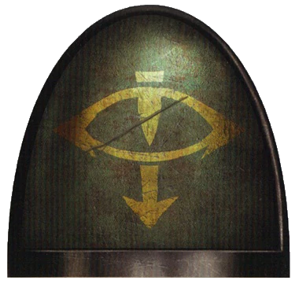

Sons of the Eye
| Sons of the Eye | |
|---|---|
 Heraldry of the Sons of the Eye | |
| Founding | After the rise of Abaddon the Despoiler in the Eye of Terror (M31–M32) |
| Progenitor | Sons of Horus (Horus) |
| Homeworld | Formerly Cthonia; later the Eye of Terror |
| Warlord | Drecarth the Sightless, the Blind Butcher of Irridous VII (killed 901.M36) |
| Allegiance | Chaos; Chaos Undivided |
| Colours | Verdigris green-black |
| Fate | Absorbed into the Black Legion in 901.M36 |
| Notable battles | |
| Battle of Keening Deep (892.M32), Sixth Black Crusade (901.M36), Siege of Arkreach (901.M36) | |
The Sons of the Eye were a large warband of Chaos Space Marines dedicated to Chaos Undivided. They broke from the Sons of Horus when Abaddon the Despoiler made himself master of the Legion, and were led by the Chaos Lord Drecarth the Sightless, the Blind Butcher of Irridous VII, a former battle-brother and captain of the Legion. Always jealous of the favour Horus had shown to Abaddon, the warband held him a usurper. Abaddon destroyed them in the Sixth Black Crusade, in 901.M36, and absorbed what was left into the Black Legion.[1]
History
[edit]After the Heresy
[edit]After the death of Horus aboard the Vengeful Spirit at the end of the Horus Heresy, Abaddon and the surviving Sons of Horus broke orbit and fled to the Eye of Terror, during the Imperial Great Scouring. The Legion had been reduced to a fraction of its size, and its captains turned to each of the Chaos Gods in turn for power and invited daemonic possession. Abaddon, sickened by war, wandered alone into the Eye. His brothers carried the stasis-preserved body of Horus to the daemon world of Maeleum, a graveyard world of steel and rust, and built a fortress from the wrecks of ships lost to the Warp. The Legion interred its primarch in a great tomb and many fell to worshipping it.[1]
During the Slave Wars, the Traitor Legions' wars of the Eye, the Emperor's Children took the body of Horus from the tomb, some say to clone him and raise a new Warmaster. The Sons of Horus fell into killing each other. Abaddon returned from his Dark Pilgrimage in time to watch the fighting, and judged that Horus's failure had brought the Legion to this. He killed the captains one by one, took command, and destroyed the stolen body and its clones. The Legion put on black in mourning and became the Black Legion.[1]
Drecarth's Folly
[edit]Not every Son of Horus swore to Abaddon. Some held that Horus was a god who would come again. Others held that they had finished with all masters. Most of them were lost to the Warp, but a few prospered. Drecarth gathered those who refused Abaddon's oath, and fled deeper into the Eye. His warband raided the daemon worlds and other renegades, and in 892.M32 won the Battle of Keening Deep against the Chaos Lord Voslok and his World Eaters warband, took the fortress and threw the skulls of its defenders into the world's soulfires. Drecarth tore the daemon axe from Voslok's grip and used it on him.[1]
Abaddon had heard of Drecarth's escape from the Daemon Prince Be'lakor and from his own sorcerers. In the guise of a truce he allied with the Sons of the Eye in the Sixth Black Crusade of 901.M36. The two forces besieged the Imperial Forge World of Arkreach for months, bombarding its forge cities from orbit, and Abaddon promised Drecarth an equal share of the plunder. When the ruins were won and the dead lay over the manufactoria, Drecarth held out his hand. Abaddon took it and drove the claws of the Talon of Horus into his stomach. Drecarth lived long enough to see his warband bow to Abaddon, and then Abaddon tore out his skull and spine. The Sons of the Eye were taken into the Black Legion as a warning to any who would challenge the Despoiler.[1][a]
Organisation and heraldry
[edit]The Sons of the Eye still wore the dark verdigris green-black of the Sons of Horus, and the gang-sigils of Cthonia graven on their armour to record kills and deeds. When Drecarth broke with Abaddon his warriors cut a line across the Eye of Horus they wore on their armour, a mark of the blindness of Horus that had brought the Legion to ruin.[1]
Notable members
[edit]- Drecarth the Sightless, Chaos Lord and founder, killed by Abaddon at Arkreach in 901.M36.
- Voslok, World Eaters warlord, killed by Drecarth at Keening Deep (892.M32).
Timeline
[edit]| Date | Event |
|---|---|
| 005.M31 | The Sons of Horus take part in the Drop Site Massacre at Isstvan V |
| 014.M31 | End of the Horus Heresy; the Sons of Horus flee into the Eye of Terror |
| M31 – M32 (undated) | Fall of Maeleum; Abaddon seizes command and the Legion becomes the Black Legion |
| M31 – M32 (undated) | Drecarth gathers the Sons of the Eye from those who refuse Abaddon's oath |
| 892.M32 | Battle of Keening Deep: Voslok's World Eaters destroyed |
| 901.M36 | Sixth Black Crusade begins; truce between Abaddon and Drecarth |
| 901.M36 | Siege of Arkreach |
| 901.M36 | Abaddon kills Drecarth; the Sons of the Eye are absorbed into the Black Legion |
See also
[edit]Notes
[edit]- ^ Be'lakor's part in the matter is unclear. Imperial scholars of the Ordo Malleus think that his advice to Abaddon served his own plans rather than those of the Chaos Gods.